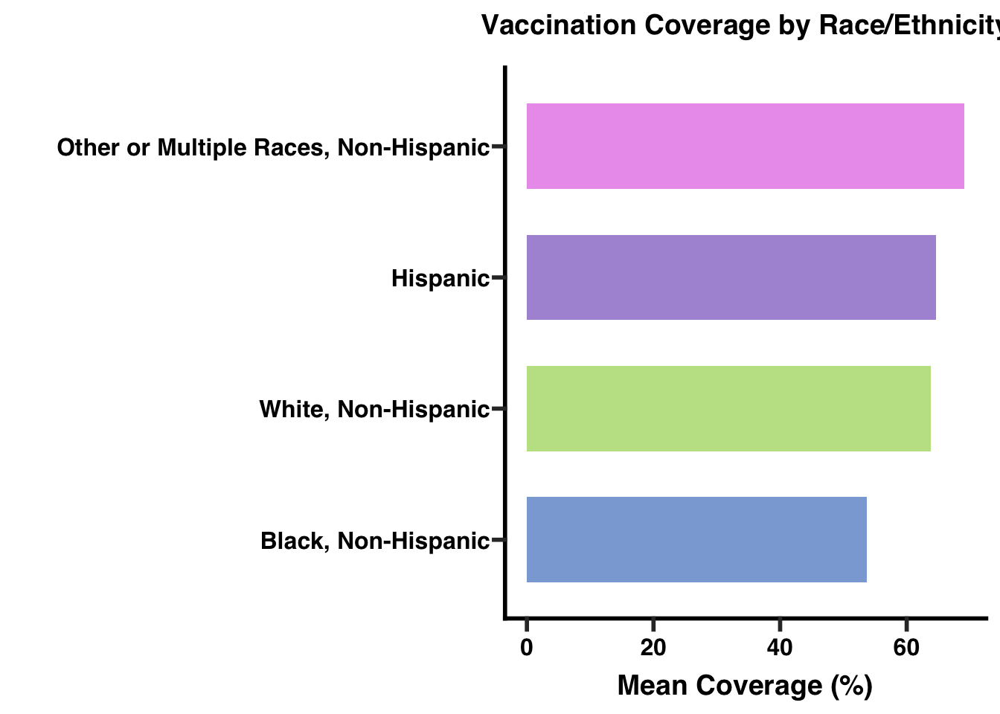
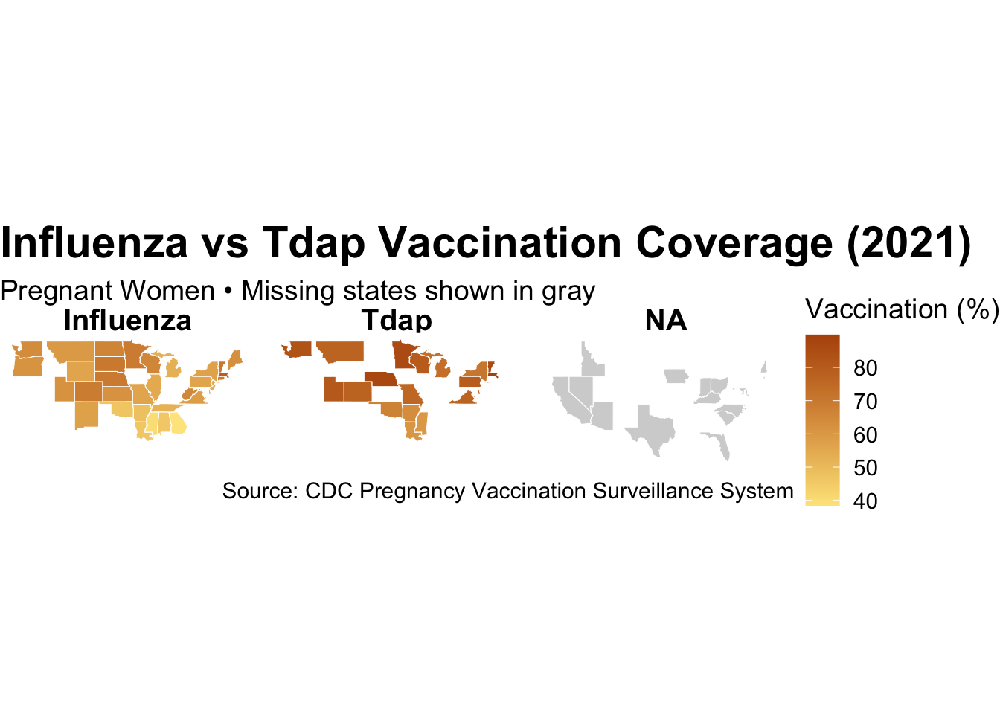
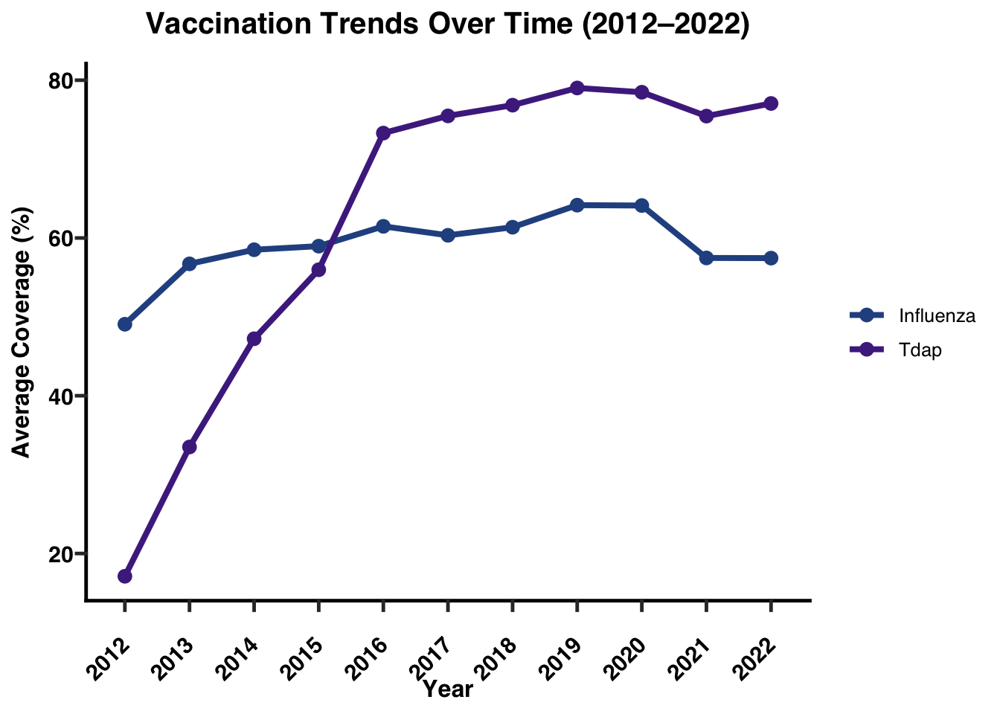
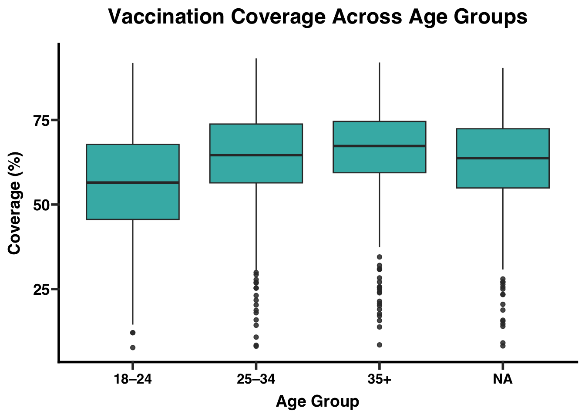
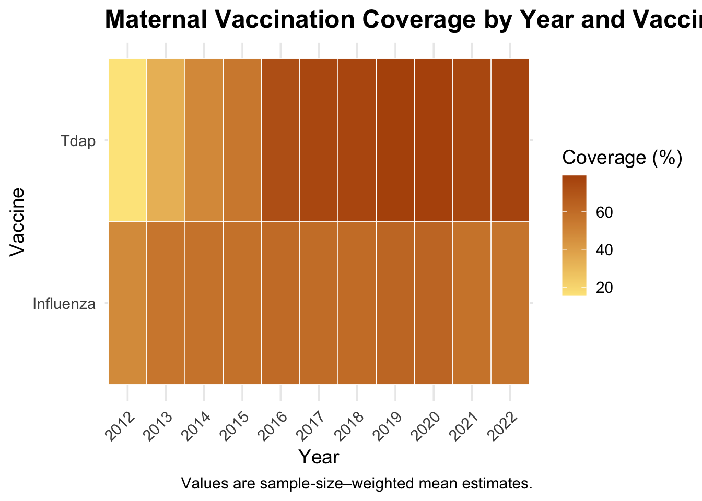
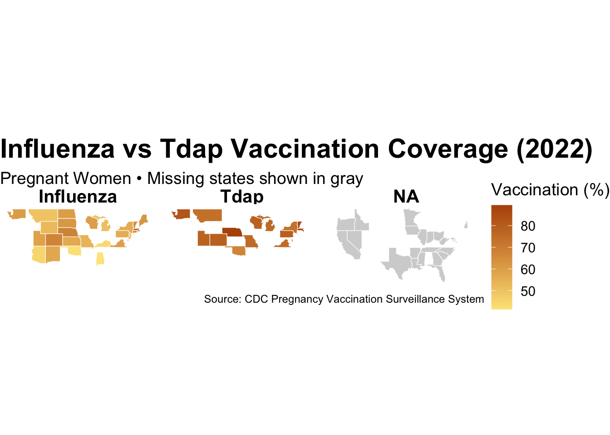
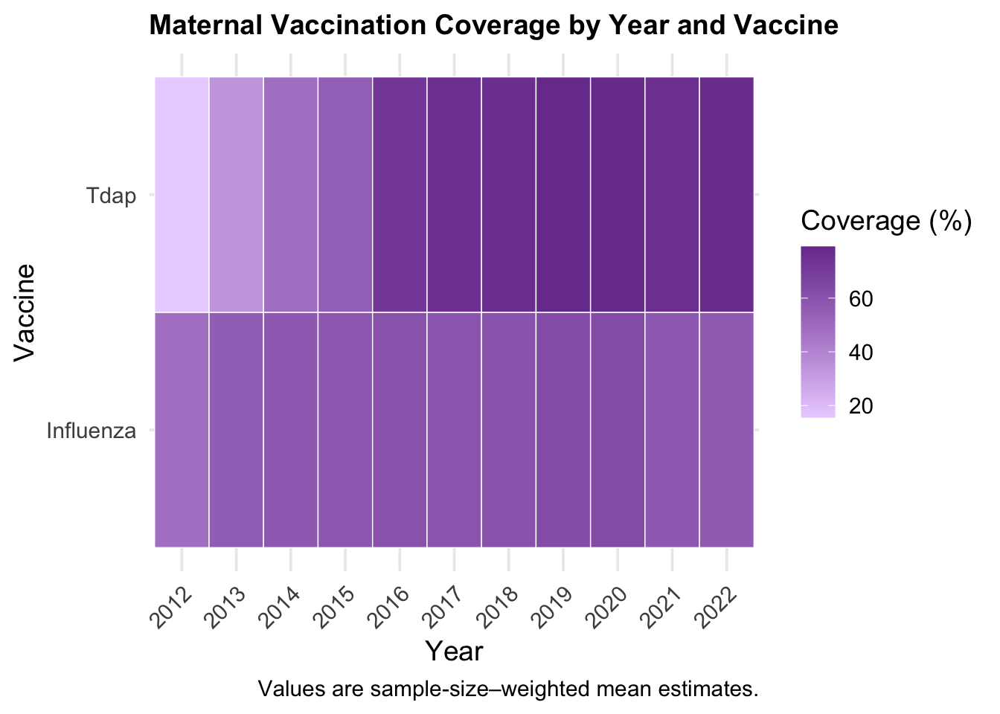

Code
library(tidyverse)
library(knitr)
library(dplyr)
library(ggprism)
library(sf)The dataset used in this project was obtained from the CDC Pregnancy Vaccination Surveillance System, which provides estimates of maternal vaccination coverage in the United States. The data were downloaded as a CSV file and imported into R for cleaning and analysis.
To prepare the dataset, variable names were standardized to lowercase and formatted for clarity (e.g., Survey Year/Influenza Season → year). Coverage estimates were converted to numeric values, and confidence interval fields were preserved in their original text form. The dataset includes information on vaccine type (Influenza or Tdap), geographic unit (national or state), survey year, demographic subgroup, and estimated vaccination coverage.
No unformatted console output (such as head(), str(), or raw print statements) is included in this report. Instead, dataset characteristics are summarized using formatted tables to ensure readability and professional presentation.
library(tidyverse)
library(knitr)
library(dplyr)
library(ggprism)
library(sf)vacc_raw <- read_csv("~/Desktop/Vaccination_Coverage_among_Pregnant_Women_20251202.csv")[1] "Vaccine" "Geography Type"
[3] "Geography" "Survey Year/Influenza Season"
[5] "Dimension Type" "Dimension"
[7] "Estimate (%)" "95% CI (%)"
[9] "Sample Size" | Columns |
|---|
| Vaccine |
| Geography Type |
| Geography |
| Survey Year/Influenza Season |
| Dimension Type |
| Dimension |
| Estimate (%) |
| 95% CI (%) |
| Sample Size |
vacc_clean <- vacc_raw |>
dplyr::rename(
vaccine = Vaccine,
geography_type = `Geography Type`,
geography = Geography,
year = `Survey Year/Influenza Season`,
dimension_type = `Dimension Type`,
dimension = Dimension,
ci = `95% CI (%)`,
sample_size = `Sample Size`
) |>
mutate(
year = as.integer(year),
estimate = parse_number(`Estimate (%)`),
sample_size = as.integer(sample_size),
vaccine = factor(vaccine),
geography_type = factor(geography_type),
dimension_type = factor(dimension_type)
) sum(vacc_raw$`Estimate (%)` %in% c("NR", "NR*"))[1] 476sum(is.na(vacc_clean$estimate))[1] 476The raw dataset has 476 NR (not reported). NR = Not Reported, meaning the vaccination coverage estimate was not provided for that state/year due to small sample size or data suppression, but they are treated as NAs.
dataset_summary <- vacc_clean |>
summarise(
total_rows = n(),
min_year = min(year),
max_year = max(year),
n_vaccines = n_distinct(vaccine),
n_geographies = n_distinct(geography),
n_dimension_types = n_distinct(dimension_type)
)
knitr::kable(dataset_summary, caption = "Summary of Dataset Characteristics")| total_rows | min_year | max_year | n_vaccines | n_geographies | n_dimension_types |
|---|---|---|---|---|---|
| 4798 | 2012 | 2022 | 2 | 52 | 2 |
data_overview <- tibble(
`Number of Rows` = nrow(vacc_clean),
`Number of Columns` = ncol(vacc_clean)
)
kable(data_overview, caption = "Dataset Size: Rows and Columns")| Number of Rows | Number of Columns |
|---|---|
| 4798 | 10 |
dimension_table <- vacc_clean |>
count(dimension_type, sort = TRUE)
kable(dimension_table, caption = "Number of Observations by Dimension Type")| dimension_type | n |
|---|---|
| Age | 2420 |
| Race and Ethnicity | 2378 |
variable_list <- tibble(
Variable = c(
"vaccine",
"geography_type",
"geography",
"year",
"dimension_type",
"dimension",
"estimate",
"ci",
"sample_size"
),
Description = c(
"Vaccine type (Influenza or Tdap)",
"Geography level (National or State)",
"State name or United States total",
"Survey year (numeric)",
"Type of demographic subgroup (Age or Race and Ethnicity)",
"Specific subgroup (e.g., 18–24, Hispanic, Non-Hispanic White)",
"Vaccination coverage estimate (%)",
"Reported 95% confidence interval for the estimate (as a text range)",
"Sample size used to compute the estimate"
)
)
kable(variable_list, caption = "Variables Included in the Cleaned Dataset")| Variable | Description |
|---|---|
| vaccine | Vaccine type (Influenza or Tdap) |
| geography_type | Geography level (National or State) |
| geography | State name or United States total |
| year | Survey year (numeric) |
| dimension_type | Type of demographic subgroup (Age or Race and Ethnicity) |
| dimension | Specific subgroup (e.g., 18–24, Hispanic, Non-Hispanic White) |
| estimate | Vaccination coverage estimate (%) |
| ci | Reported 95% confidence interval for the estimate (as a text range) |
| sample_size | Sample size used to compute the estimate |
na_summary <- vacc_clean |>
summarise(across(everything(), ~ sum(is.na(.)))) |>
tidyr::pivot_longer(cols = everything(),
names_to = "Variable",
values_to = "Missing Values")
knitr::kable(na_summary, caption = "Number of Missing Values per Variable")| Variable | Missing Values |
|---|---|
| vaccine | 0 |
| geography_type | 0 |
| geography | 0 |
| year | 0 |
| dimension_type | 0 |
| dimension | 0 |
| Estimate (%) | 0 |
| ci | 0 |
| sample_size | 232 |
| estimate | 476 |
vaccine_table <- vacc_clean |>
count(vaccine, sort = TRUE)
kable(vaccine_table, caption = "Number of Observations by Vaccine Type")| vaccine | n |
|---|---|
| Influenza | 3220 |
| Tdap | 1578 |
colnames(vacc_clean) [1] "vaccine" "geography_type" "geography" "year"
[5] "dimension_type" "dimension" "Estimate (%)" "ci"
[9] "sample_size" "estimate" kable(
data.frame(Column_Name = colnames(vacc_clean)),
caption = "Column Names in vacc_clean"
)| Column_Name |
|---|
| vaccine |
| geography_type |
| geography |
| year |
| dimension_type |
| dimension |
| Estimate (%) |
| ci |
| sample_size |
| estimate |
Distribution of State-Level Coverage:
Influenza
vacc_state <- vacc_clean %>%
filter(geography_type == "States")
infl_state <- vacc_state %>%
filter(vaccine == "Influenza")
ggplot(na.omit(infl_state), aes(x = estimate)) +
geom_histogram(
bins = 20,
fill = "#4E79A7",
color = "white",
linewidth = 0.2,
alpha = 0.9
) +
geom_vline(
xintercept = mean(infl_state$estimate, na.rm = TRUE),
linetype = "dashed",
linewidth = 0.7
) +
labs(
title = "Distribution of State-Level Influenza Vaccination Coverage",
x = "Coverage (%)",
y = "Number of States"
) +
theme_prism(base_size = 12) +
theme(
plot.title = element_text(size = 14, face = "bold")
)
The histogram shows the distribution of state-level influenza vaccination coverage among pregnant women across all available years. Coverage estimates range from approximately 15% to 95%, with most states clustering between 45% and 75%. The distribution is roughly bell-shaped, indicating that most observations fall near the middle rather than at the extremes.
The dashed vertical line marks the mean state-level vaccination coverage, which is around 60%. A large concentration of states appears just above and below this average, suggesting moderate variability across states but no extreme outliers. Lower coverage values (<30%) and very high values (>80%) occur rarely.
Overall, the plot indicates that while vaccination coverage varies, most states achieve influenza vaccination rates within a relatively consistent mid-range.
vacc_state <- vacc_clean %>%
filter(geography_type == "States")
tdap_state <- vacc_state %>%
filter(vaccine == "Tdap")
ggplot(na.omit(tdap_state), aes(x = estimate)) +
geom_histogram(
bins = 20,
fill = "#E15759",
color = "white",
linewidth = 0.2,
alpha = 0.9
) +
geom_vline(
xintercept = mean(tdap_state$estimate, na.rm = TRUE),
linetype = "dashed",
linewidth = 0.7
) +
labs(
title = "Distribution of State-Level Tdap Vaccination Coverage",
x = "Coverage (%)",
y = "Number of States"
) +
theme_prism(base_size = 12) +
theme(
plot.title = element_text(size = 14, face = "bold")
)
This histogram displays the distribution of Tdap vaccination coverage among U.S. states across all years in the dataset. Coverage values range broadly, from below 10% in some early years to nearly 100% in later years. The distribution is noticeably right-shifted, indicating that Tdap vaccination rates are generally higher than influenza vaccination rates across states. A large concentration of observations falls between 65% and 85%, and the mean coverage (indicated by the dashed line) is roughly 75%. This suggests that most states achieve relatively high Tdap vaccination rates among pregnant women. Lower coverage values (<30%) appear only rarely and likely represent older survey years when Tdap recommendations for pregnancy were still being established.
Overall, the distribution shows substantial improvement over time, with the majority of state-level estimates clustered in the upper range of the coverage spectrum.
ggplot(vacc_clean, aes(x = vaccine, y = estimate, fill = vaccine)) +
geom_boxplot(
outlier.alpha = 0.20,
outlier.size = 1,
alpha = 0.9,
na.rm = TRUE
) +
labs(
title = "Influenza vs Tdap Vaccination Coverage",
x = "Vaccine Type",
y = "Coverage (%)"
) +
scale_fill_prism(palette = "floral") +
theme_prism(base_size = 14) +
theme(
legend.position = "none",
plot.title = element_text(size = 18, face = "bold"),
axis.title.x = element_text(size = 14),
axis.title.y = element_text(size = 14),
axis.text = element_text(size = 12)
)
This boxplot compares state-level vaccination coverage for Influenza and Tdap among pregnant women across all survey years. Influenza coverage shows a median around 60%, with values generally ranging from 50% to 70%. The distribution is moderately spread out, and several lower outliers (below 30%) represent early years when influenza vaccination uptake among pregnant women was lower. In contrast, Tdap coverage is noticeably higher, with a median close to 75% and most values falling between 65% and 85%.
Overall, the comparison highlights that Tdap vaccination coverage is substantially higher and more consistent across states than influenza vaccination coverage.
trend <- vacc_clean %>%
mutate(year = as.numeric(year)) %>%
group_by(year) %>%
summarise(mean_coverage = mean(estimate, na.rm = TRUE))
ggplot(trend, aes(x = year, y = mean_coverage)) +
geom_line(color = "#2C73D2", linewidth = 1.6) +
geom_point(color = "#FFA500", size = 3.5) +
scale_y_continuous(limits = c(40, NA)) +
scale_x_continuous(breaks = seq(min(trend$year), max(trend$year), 1)) +
labs(
title = "Maternal Vaccination Coverage Over Time",
x = "Survey Year",
y = "Mean Coverage (%)"
) +
theme_prism(base_size = 14) +
theme(plot.title = element_text(size = 18, face = "bold"))
Maternal vaccination coverage shows a gradual upward trend from 2012 to around The line plot shows the average maternal vaccination coverage in the United States from 2012 to 2022. Coverage increased steadily from about 42% in 2012 to a peak of nearly 70% between 2018 and 2020. After 2020, coverage declined slightly but remained relatively high, stabilizing around 65–67% in 2021–2022. Each point represents the mean vaccination coverage for that survey year, excluding missing values but retaining them in the dataset. Overall, the trend indicates substantial improvement in maternal vaccination uptake over the past decade, followed by a modest decrease in the most recent years.
trend_data <- vacc_clean %>%
filter(
geography_type == "States",
vaccine %in% c("Influenza", "Tdap")
) %>%
mutate(year4 = stringr::str_extract(year, "^[0-9]{4}")) %>%
filter(!is.na(year4),
year4 >= "2012",
year4 <= "2022") %>%
group_by(year4, vaccine) %>%
summarise(
mean_coverage = mean(estimate, na.rm = TRUE),
.groups = "drop"
) %>%
mutate(
year = factor(year4, levels = as.character(2012:2022))
)
ggplot(trend_data, aes(x = year, y = mean_coverage, color = vaccine, group = vaccine)) +
geom_line(linewidth = 1.4) +
geom_point(size = 2.8) +
scale_color_prism(palette = "floral") +
labs(
title = "Vaccination Trends Over Time (2012–2022)",
x = "Year",
y = "Average Coverage (%)",
color = "Vaccine"
) +
scale_x_discrete(drop = FALSE) +
theme_prism(base_size = 12) +
theme(
axis.text.x = element_text(angle = 45, hjust = 1),
plot.title = element_text(size = 15, face = "bold")
)
The plot shows the average vaccination coverage for Influenza and Tdap among pregnant women in the United States from 2012 to 2022. Influenza coverage begins around 48% in 2012, rises gradually to a peak of about 64–65% by 2019–2020, and then declines modestly after 2020. In contrast, Tdap coverage starts much lower—around 17% in 2012—but increases sharply, reaching more than 70% by 2016 and remaining consistently high (approximately 75–80%) through the rest of the decade. Overall, Tdap shows a rapid and sustained increase, while influenza shows moderate gains followed by a slight decline in recent years.
Age:
age_summary <- vacc_clean %>%
filter(
dimension_type == "Age",
vaccine %in% c("Influenza", "Tdap")
) %>%
group_by(vaccine, dimension) %>%
summarise(
mean_coverage = mean(estimate, na.rm = TRUE),
median_coverage = median(estimate, na.rm = TRUE),
n = n(),
.groups = "drop"
)
kable(
age_summary,
digits = 1,
caption = "Vaccination Coverage by Age Group and Vaccine"
)| vaccine | dimension | mean_coverage | median_coverage | n |
|---|---|---|---|---|
| Influenza | 18-24 Years | 52.2 | 52.5 | 406 |
| Influenza | 25-34 Years | 60.8 | 61.0 | 406 |
| Influenza | >=18 Years | 59.5 | 59.8 | 406 |
| Influenza | >=35 Years | 64.0 | 64.7 | 406 |
| Tdap | 18-24 Years | 66.1 | 71.9 | 199 |
| Tdap | 25-34 Years | 70.0 | 76.2 | 199 |
| Tdap | >=18 Years | 68.9 | 75.2 | 199 |
| Tdap | >=35 Years | 68.8 | 72.8 | 199 |
age_data <- vacc_clean %>%
filter(dimension_type == "Age") %>%
mutate(
estimate = as.numeric(estimate),
dimension_clean = case_when(
grepl("18", dimension) & grepl("24", dimension) ~ "18–24",
grepl("25", dimension) & grepl("34", dimension) ~ "25–34",
grepl("35", dimension) ~ "35+",
grepl("≥18", dimension) ~ "≥18",
TRUE ~ dimension
),
dimension_clean = factor(dimension_clean,
levels = c("18–24", "25–34", "35+","≥18"))
)
ggplot(age_data, aes(x = dimension_clean, y = estimate)) +
geom_boxplot(fill = "#00A9A5", alpha = 0.85, na.rm = TRUE) +
labs(
title = "Vaccination Coverage Across Age Groups",
x = "Age Group",
y = "Coverage (%)"
) +
theme_prism(base_size = 14) +
theme(
plot.title = element_text(size = 18, face = "bold"),
axis.text.x = element_text(size = 12)
)
The boxplot compares vaccination coverage across maternal age groups. Overall, coverage tends to increase with age. The 18–24 group shows the lowest median coverage and the greatest variability, with several low outliers. Coverage improves in the 25–34 and 35+ groups, which exhibit higher medians and narrower interquartile ranges, indicating more consistent uptake among older pregnant individuals. Together, the distributions suggest that younger pregnant women are less consistently vaccinated, while older age groups demonstrate higher and more stable coverage levels.
Race & Ethnicity:
race_summary <- vacc_clean %>%
filter(
dimension_type == "Race and Ethnicity",
vaccine %in% c("Influenza", "Tdap")
) %>%
group_by(vaccine, dimension) %>%
summarise(
mean_coverage = mean(estimate, na.rm = TRUE),
median_coverage = median(estimate, na.rm = TRUE),
n_total = n(),
n_non_missing = sum(!is.na(estimate)),
.groups = "drop"
)
kable(
race_summary,
digits = 1,
caption = "Vaccination Coverage by Race/Ethnicity and Vaccine"
)| vaccine | dimension | mean_coverage | median_coverage | n_total | n_non_missing |
|---|---|---|---|---|---|
| Influenza | Black, Non-Hispanic | 49.0 | 48.1 | 393 | 271 |
| Influenza | Hispanic | 61.7 | 63.3 | 394 | 306 |
| Influenza | Other or Multiple Races, Non-Hispanic | 66.1 | 67.8 | 404 | 282 |
| Influenza | White, Non-Hispanic | 61.0 | 60.3 | 405 | 398 |
| Tdap | Black, Non-Hispanic | 62.2 | 65.2 | 192 | 146 |
| Tdap | Hispanic | 70.1 | 76.0 | 192 | 164 |
| Tdap | Other or Multiple Races, Non-Hispanic | 74.5 | 78.9 | 199 | 155 |
| Tdap | White, Non-Hispanic | 69.4 | 75.7 | 199 | 199 |
race_data <- vacc_clean %>%
filter(dimension_type == "Race and Ethnicity") %>%
group_by(dimension) %>%
summarise(mean_coverage = mean(estimate, na.rm = TRUE)) %>%
ungroup() %>%
mutate(
dimension_label = dplyr::recode(
dimension,
"Other or Multiple Races, Non-Hispanic" = "Other or Multiple Races,\nNon-Hispanic",
"White, Non-Hispanic" = "White,\nNon-Hispanic",
"Black, Non-Hispanic" = "Black,\nNon-Hispanic",
.default = dimension
)
)
ggplot(race_data,
aes(x = reorder(dimension_label, mean_coverage),
y = mean_coverage,
fill = dimension_label)) +
geom_col(width = 0.65, alpha = 0.9) +
coord_flip() +
labs(
title = "Vaccination Coverage by Race/Ethnicity",
x = "",
y = "Mean Coverage (%)"
) +
scale_fill_prism(palette = "floral") +
theme_prism(base_size = 12) +
theme(
legend.position = "none",
plot.title = element_text(size = 14, face = "bold"),
axis.text.y = element_text(size = 11),
axis.text.x = element_text(size = 11)
)
The differences between the groups are not very clear. Hispanic and White (Non-Hispanic) have similar uptake. Black group shows the lowest among all race.
Influenza vs Tdap vaccination coverage over states:
get_state_map <- function(data, vax_name, year_target = 2022) {
data %>%
filter(
geography_type == "States",
vaccine == vax_name,
year == year_target
) %>%
group_by(geography) %>%
slice_max(sample_size, n = 1, with_ties = FALSE) %>%
ungroup() %>%
transmute(
state_name = tolower(geography),
estimate_state = estimate
)
}
influenza_states <- get_state_map(vacc_clean, "Influenza")
tdap_states <- get_state_map(vacc_clean, "Tdap")
states_geo <- st_as_sf(maps::map("state", plot = FALSE, fill = TRUE)) %>%
mutate(state_name = tolower(ID))
combined_states <- bind_rows(
influenza_states %>% mutate(vaccine = "Influenza"),
tdap_states %>% mutate(vaccine = "Tdap")
)
combined_map <- states_geo %>%
left_join(combined_states, by = "state_name")
ggplot(combined_map) +
geom_sf(
aes(fill = estimate_state),
color = "white",
size = 0.2
) +
scale_fill_gradient(
low = "#FDE68A",
high = "#B45309",
na.value = "lightgray",
name = "Vaccination (%)"
) +
facet_wrap(~ vaccine, nrow = 1) +
labs(
title = "Influenza vs Tdap Vaccination Coverage (2022)",
subtitle = "Pregnant Women • Missing states shown in gray",
caption = "Source: CDC Pregnancy Vaccination Surveillance System"
) +
theme_void(base_size = 14) +
theme(
strip.text = element_text(size = 15, face = "bold"),
plot.title = element_text(size = 22, face = "bold"),
plot.subtitle = element_text(size = 14),
plot.caption = element_text(size = 9)
)
Because the PRAMS Internet Panel Survey relies on voluntary state participation, not all 50 states contribute data each year. State participation changes over time, and in 2022 the dataset is missing 22 states. This incomplete geographic coverage makes it difficult to assess true national vaccination levels and introduces uncertainty when comparing trends or geographic variation. 2022 is used because its the lastest year from the dataset. Also, each year from the dataset has missing states so this dataset limits the ability to see the true nationwide vaccination coverage, so only 2022 is shown.
all_states <- state.name
missing_by_year <- vacc_state %>%
filter(!is.na(year)) %>%
distinct(year, geography) %>%
group_by(year) %>%
summarise(
present_states = list(unique(geography)),
missing_states = list(setdiff(all_states, present_states[[1]])),
n_missing = length(missing_states[[1]])
)
formatted_missing_by_year <- missing_by_year %>%
mutate(
missing_states = sapply(missing_states, function(x)
paste0(paste(head(x, 3), collapse = ", "), " ... (", length(x), " missing)")
),
present_states = NULL # optional: remove present_states to make table tiny
)
kable(
formatted_missing_by_year,
caption = "Missing State Data by Year",
align = "c",
col.names = c("Year", "Missing States", "# Missing")
)| Year | Missing States | # Missing |
|---|---|---|
| 2012 | Alabama, Arizona, California … (22 missing) | 22 |
| 2013 | Alabama, Arizona, California … (20 missing) | 20 |
| 2014 | Arizona, Arkansas, California … (23 missing) | 23 |
| 2015 | Arizona, California, Florida … (17 missing) | 17 |
| 2016 | Alabama, Arizona, California … (20 missing) | 20 |
| 2017 | Arizona, Arkansas, California … (16 missing) | 16 |
| 2018 | Arizona, California, Florida … (10 missing) | 10 |
| 2019 | Arizona, California, Idaho … (10 missing) | 10 |
| 2020 | California, Idaho, Indiana … (11 missing) | 11 |
| 2021 | Alaska, Arizona, California … (16 missing) | 16 |
| 2022 | Alaska, Arkansas, California … (22 missing) | 22 |
These are the missing states from the dataset.
year_vax_summary <- vacc_clean %>%
filter(!is.na(year), !is.na(vaccine)) %>%
mutate(year4 = stringr::str_extract(year, "^[0-9]{4}")) %>%
filter(
!is.na(year4),
year4 >= "2012",
year4 <= "2022"
) %>%
group_by(year4, vaccine) %>%
summarise(
coverage = weighted.mean(estimate, sample_size, na.rm = TRUE),
.groups = "drop"
) %>%
mutate(
year = factor(year4, levels = as.character(2012:2022))
)
ggplot(year_vax_summary, aes(x = year, y = vaccine, fill = coverage)) +
geom_tile(color = "white") +
scale_fill_gradient(
low = "#EBD4FF",
high = "#7A3E9D",
name = "Coverage (%)"
) +
labs(
title = "Maternal Vaccination Coverage by Year and Vaccine",
x = "Year",
y = "Vaccine",
caption = "Values are sample-size–weighted mean estimates."
) +
theme_minimal(base_size = 14) +
theme(
axis.text.x = element_text(angle = 45, hjust = 1),
plot.title = element_text(size = 14, face = "bold")
)
The heatmap shows that Tdap vaccination coverage increased rapidly from 2012 to 2016 and remained high through 2022, while influenza coverage rose more slowly and fluctuated, with a decline after 2020. Overall, Tdap consistently demonstrated higher uptake than influenza among pregnant women.